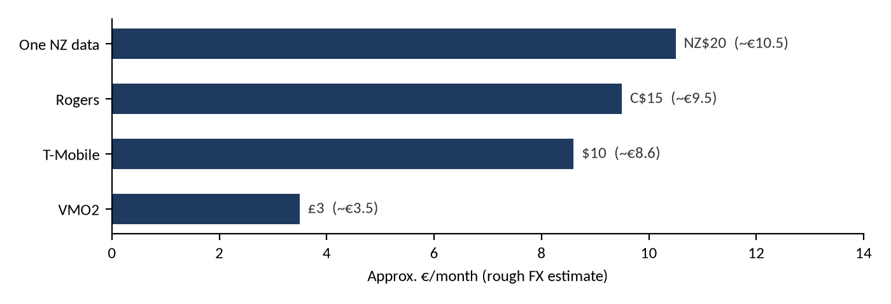

BRIEFING
Satellite Direct-to-Device: Benefits & Business Case for MNOs
What satellite direct-to-device (D2D) gives mobile operators and their customers, how Starlink Mobile and AST SpaceMobile compare, what operators charge today, and a sourced reference list for each provider's value proposition. Status as of 26 Oct 2026.
Status as of 26 October 2026
Exported from the Page “Satellite Direct-to-Device: Benefits & Business Case for MNOs”. Figures marked as estimates, company claims or unverified in the source are labelled the same way here.
Contents
2. What D2D is and how it works 3
5. Starlink Direct to Cell vs AST SpaceMobile 5
6. Pricing and revenue evidence 6
7. Illustrative revenue model 7
8. AST SpaceMobile references 8
9. Starlink Mobile / Direct to Cell references 10
10. Market and analyst references 12
Entries are clickable. In Word, right-click the table of contents and choose Update Field to refresh page numbers after edits.
1. Bottom line
Retention first, revenue second Today D2D mostly helps operators keep customers and stand out from rivals; it is not yet a large new revenue line. Analysys Mason estimates about 1% revenue uplift for early adopters offering messaging, rising to about 3% once satellite data arrives, which it does not expect before 2028. Vodafone's CEO said in July 2026 that she does not see it as “a massive revenue stream”. Starlink is live with paying customers; AST is pre-commercial but designed for full broadband. |
2. What D2D is and how it works
1. A cell tower in orbit. LEO satellites carry an LTE or 5G base station (Starlink: eNodeB payload at ~360 km) or a very large phased array (AST: ~2,400 sq ft per Block 2 satellite).
2. Unmodified phones. Existing smartphones connect with no new hardware or app; the phone sees a partner network when terrestrial signal is lost.
3. Spectrum. Phase 1 borrows a slice of the operator's terrestrial spectrum (T-Mobile PCS, VMO2 5 MHz of 1800 MHz, Fastweb 2.6 GHz). Next: dedicated MSS spectrum such as 2 GHz S-band (Starlink V2) or AST's own and partner bands.
4. Core integration. The operator keeps the customer and the billing; the satellite network plugs into the operator's core much like a roaming partner.
3. Benefits to MNOs
Benefit | Evidence |
|---|---|
Closing coverage gaps | VMO2 UK landmass coverage went from 89% to 95%; T-Mobile cites 500,000+ sq mi; One NZ says 40% of NZ has no towers |
Lower churn | Analysys Mason: 79% of subscribers considering churning are interested in D2D |
ARPU uplift and premium tiers | Paid add-ons (T-Mobile $10, Rogers C$15, One NZ data NZ$20, O2 £3) or bundled into top plans |
Differentiation and taking customers | T-Mobile and Rogers sell satellite service to rivals' customers via eSIM |
Avoided capex | Starlink pitches 'invest less in terrestrial networks'; DT targets areas where masts are hard to build (terrain, nature protection). No sourced capex figures |
Coverage obligations | Satellite adds landmass and road coverage that regulators measure; not yet accepted as meeting licence obligations (unverified) |
Emergency and resilience | SpaceX: 1.5M+ people communicated via D2C during US disasters; text-to-911; wireless emergency alerts |
Government and public safety | AT&T FirstNet spectrum in AST's FCC grant; AST US government awards of $125M+; Kyivstar wartime use |
IoT and enterprise | SpaceX says D2C enables remote IoT; AST counts IoT in its addressable market |
Roaming, maritime, travel | Starlink offers reciprocal connectivity across partner nations; aviation use not verified |
Wholesale | Satellite Connect Europe offers open access to other MNOs |
4. Key features by phase
Shading: green = live / commercial; amber = pre-commercial (status highlighting carried over from the source Page).
Feature | Starlink Mobile | AST SpaceMobile |
|---|---|---|
SMS, MMS, RCS | Live (T-Mobile, One NZ, Telstra, KDDI, Rogers, Entel, Kyivstar, VMO2) | Demonstrated; not commercial |
Emergency text and alerts | Live: text-to-911, emergency alerts in disasters | Planned (FirstNet partner) |
App data (WhatsApp, Maps, X) | Live: T-Mobile, KDDI, Entel, VMO2 | Demonstrated |
Voice | Via apps (WhatsApp) today; native voice on V2 | Native voice designed; demo calls done |
Video and broadband | V2 from mid-2027 | Video calls demonstrated; beta 2026–27 |
IoT | Remote IoT enabled (SpaceX) | In addressable market |
5. Starlink Direct to Cell vs AST SpaceMobile
Starlink Mobile | AST SpaceMobile | |
|---|---|---|
Spectrum | V1: slice of partner spectrum. V2: EchoStar 2 GHz/AWS-4/H-block (US 50 MHz plus global MSS; final closing 30 Nov 2027). US 800 MHz deal pending FCC | Partner low and mid band (tunes ~1,150 MHz) plus AST's own S-band priority rights |
Satellites | 650 V1 D2C in orbit; FCC approved 15,000 V2 (Oct 2026) | 13 BlueBirds in orbit (Aug 2026); ~45 by early 2027; 100+ for global; FCC grant Apr 2026 |
Claimed capacity | V2: ~20x throughput per satellite, 100x+ system capacity; up to 150 Mbps reported | 150+ Mbps peak per cell, 2,000+ cells per satellite (AST site) |
Users and partners | 6M+ users (Sep 2025); 10M monthly actives, 35 MNOs (Mar 2026) | 60+ MNOs covering 3B+ subscribers (all pre-commercial) |
Status | Commercial in 8+ markets | Pre-commercial; Japan operations Aug 2026 |
Commercial model | Wholesale, roaming-style; terms not disclosed | Wholesale revenue share (50/50 in Vodafone markets); prepayments (Verizon, stc $175M) |
Financial scale | Not disclosed for D2C | 2026 revenue guidance $150–200M; ~$1.30B backlog |
6. Pricing and revenue evidence
Operator | Provider | Retail model |
|---|---|---|
T-Mobile (US) | Starlink | $10/month or included in top plans; free text-to-911 |
Rogers (CA) | Starlink | C$15/month; C$10 for 12 months for existing customers; free on new 5G+ plans |
One NZ | Starlink | TXT included on Pay Monthly; data NZ$20/month add-on |
Telstra (AU) | Starlink | Messaging included on eligible plans |
Virgin Media O2 (UK) | Starlink | £3/month bolt-on; to be included in Ultimate plans |
KDDI (JP) | Starlink | Free for au users at launch |
Kyivstar (UA) | Starlink | Free SMS at launch |
Monthly add-on prices converted to an approximate €/month for comparison (exchange rates are rough estimates):

Add-on | Local price / month | Approx. €/month (estimate) |
|---|---|---|
One NZ data | NZ$20 | ~€10.5 |
Rogers | C$15 | ~€9.5 |
T-Mobile | $10 | ~€8.6 |
VMO2 | £3 | ~€3.5 |
7. Illustrative revenue model
Illustrative - hypothetical inputs, not operator data Every input is an assumption you can change. The defaults are hypothetical, not company data, and every output is an estimate. (On the source Page this model is interactive; the tables below show its default inputs and the outputs they produce.) |
Default inputs (assumptions)
Input (assumption) | Default value |
|---|---|
Subscriber base (millions) | 10 |
Paid add-on take-up (%) | 5 |
Add-on price (€/month) | 4 |
Satellite partner revenue share (%) | 50 |
Blended ARPU (€/month) | 15 |
Annual churn reduction, exposed segment (pp) | 0.5 |
Segment exposed to coverage gaps (%) | 20 |
Resulting outputs (estimates)
Output (estimate) | Value | Note |
|---|---|---|
Gross add-on revenue / yr | €24.0M | |
Net to MNO after share | €12.0M | |
Revenue retained via churn / yr | €1.8M | |
1% uplift benchmark | €18.0M | Analysys Mason, messaging |
3% uplift benchmark | €54.0M | Analysys Mason, data |
Illustrative - hypothetical inputs, not operator data.
Formulas: gross = subscribers × take-up × price × 12; net = gross × (1 − share); retained = subscribers × exposed share × churn reduction × ARPU × 12. The model leaves out integration cost, capex avoided and device constraints. The default price sits between the O2 and T-Mobile price points; the 50% share mirrors AST's disclosed Vodafone terms.
8. AST SpaceMobile references
# | Reference | Supports | Link |
|---|---|---|---|
1 | 60+ MNO partners covering 3B+ subscribers; ~$1.30B contracted backlog; 13 BlueBirds in orbit; 2026 revenue guidance $150–200M | https://www.sec.gov/Archives/edgar/data/1780312/000119312526342540/asts-ex99_1.htm | |
2 | Wholesale-via-MNO model; Block 2 array ~2,400 sq ft with up to 10x Block 1 bandwidth; launch history incl. BB7 loss | https://www.sec.gov/Archives/edgar/data/1780312/000119312526342550/asts-20260630.htm | |
3 | Users reach the service through their MNO, not a direct AST subscription | https://www.sec.gov/Archives/edgar/data/1780312/000095017025030909/asts-20241231.htm | |
4 | 50/50 revenue share in Vodafone exclusivity markets; Vodafone builds ground stations at agreed cost | https://www.sec.gov/Archives/edgar/data/1780312/000095017023063737/R21.htm | |
5 | ~45 satellites by early 2027; 100+ for worldwide service; TAM widened to government, IoT, edge compute | ||
6 | Claims of 150+ Mbps peak per cell and 2,000+ cells per satellite: the broadband value proposition | ||
7 | FCC authorization and order for AST (DA 26-391, 21 Apr 2026) | US regulatory clearance for supplemental coverage from space with partner spectrum | |
8 | Definitive US partner through 2030; coverage-gap and FirstNet public-safety angle | https://about.att.com/story/2024/ast-spacemobile-commercial-agreement.html | |
9 | Second US tier-1 partner; service on 850 MHz from 2026 | ||
10 | MNO prepayment as a funding model: $65M prepayments plus $35M convertible notes | ||
11 | Long-term European anchor partner | ||
12 | 10-year deal with prepaid revenue commitment; sovereign gateways and Riyadh operations centre | ||
13 | Emerging-market coverage, disaster response and inclusion case in India | ||
14 | Video calls on unmodified phones; disaster-resilience positioning | https://corp.mobile.rakuten.co.jp/english/news/press/2025/0423_01/ | |
15 | First operational market activity; Rakuten service planned for Q4 2026 | ||
16 | European sovereignty pitch: EU-operated ground network, operators keep the customer | ||
17 | Open-access wholesale model for European MNOs | ||
18 | Multi-country MNO adoption (AT, DK, IE, IT, SE) | ||
19 | Ofcom 900 MHz approval; native voice, SMS and data positioning | ||
20 | Timing risk: beta depends on ~45 satellites | ||
21 | Counterpoint: CEO sees D2D as a satisfaction and retention tool, not a large revenue stream | https://www.telecoms.com/satellite/vodafone-says-satellite-will-not-be-a-big-money-maker |
9. Starlink Mobile / Direct to Cell references
# | Reference | Supports | Link |
|---|---|---|---|
22 | Main product page: works with existing LTE phones, integrates like a roaming partner | ||
23 | 650 satellites; partners on six continents; reciprocal connectivity for partners | ||
24 | SpaceX: The future of Starlink Direct to Cell (EchoStar deal) | 50 MHz US S-band plus global MSS licences; ~20x per-satellite throughput; 100x+ system capacity; disaster-use data | https://www.spacex.com/updates/spacex-echostar-spectrum-agreement |
25 | Regulatory approval of the spectrum assignment (12 May 2026) | https://www.fcc.gov/document/order-granting-spacex-echostar-applications | |
26 | Primary filing for the spectrum transfer | ||
27 | Spectrum transfer closing; final acquisition closing targeted for 30 Nov 2027 | https://www.sec.gov/Archives/edgar/data/1415404/000141540426000013/sats-20260522x8k.htm | |
28 | V2 terrestrial-like experience from mid-2027; operators can 'invest less in terrestrial networks'; Kyivstar ~3M subscribed | https://www.fierce-network.com/wireless/mwc-starlink-mobile-unveils-plans-v2-satellites-and-more | |
29 | User scale and V2 capacity claims | ||
30 | $10/month add-on, included in top plans; sold to AT&T and Verizon customers too; free text-to-911 | ||
31 | Commercial launch and coverage-gap marketing | https://www.t-mobile.com/news/network/t-satellite-now-available | |
32 | Move from messaging to app data; differentiation and pricing | https://www.t-mobile.com/news/network/t-satellite-data-ready-app-expansion | |
33 | Canadian launch (Jul 2025); text-to-911 | https://about.rogers.com/news/rogers-launches-satellite-to-mobile-service-in-canada/ | |
34 | Terrestrial covers only 28% of Atlantic Canada; bundling to drive plan upgrades | ||
35 | C$15/month standalone; C$10 for first 12 months for existing customers | ||
36 | TXT included on Pay Monthly; Satellite Data NZ$20/month add-on: tiered pricing | ||
37 | First commercial launch (Dec 2024) at no extra cost | ||
38 | Included in eligible plans; national coverage message | https://www.telstra.com.au/exchange/telstra-launch-satellite-messaging | |
39 | Nationwide coverage of Japan; free at launch for au users | https://newsroom.kddi.com/english/news/detail/kddi_nr-533_3818.html | |
40 | App data on satellite (Aug 2025) | https://newsroom.kddi.com/english/news/detail/kddi_nr-702_4082.html | |
41 | Switzerland trial; alpine coverage | ||
42 | Wartime resilience; free SMS at launch | ||
43 | First commercial service in Latin America | ||
44 | Feature upgrade from SMS to apps | ||
45 | UK rural coverage case | ||
46 | European price point; landmass coverage 89% to 95% | https://www.telecoms.com/satellite/o2-satellite-goes-live-at-3-per-month | |
47 | V2 deal in 10 countries from 2028; coverage where building masts is hard; resilience | ||
48 | Italian rural pilot on 2.6 GHz spectrum |
10. Market and analyst references
# | Reference | Supports | Link |
|---|---|---|---|
49 | ~1% revenue uplift from messaging; ~3% once data arrives (not before 2028) | https://www.analysysmason.com/about-us/news/predictions-2026/prediction-satellite-d2d/ | |
50 | ~US$200M global alerts and messaging market in 2025; retention focus | https://www.analysysmason.com/research/content/podcasts/satellite-d2d-value-nsi139/ | |
51 | Voice and data widely available by 2030; multi-billion-dollar opportunity (paid report) | https://www.analysysmason.com/research/content/reports/satellite-consumer-d2d/ | |
52 | D2D as a lever for both ARPU and churn (paid report; abstracts only) | https://www.gsmaintelligence.com/series/satellite-and-ntn-tracker | |
53 | Starlink: 10M monthly active users, 35 MNO partners; V2 launches from mid-2027 | https://www.lightreading.com/satellite/telcos-pick-satellite-sides-in-mobile-broadband-space-race | |
54 | Alternative: NB-NTN messaging on newer phones |
54 references in total. Reference titles and URLs are clickable hyperlinks.
11. Gaps and caveats
- Starlink's wholesale revenue-share terms with MNOs are not public; no figure is given here.
- AST's 50/50 split applies to Vodafone exclusivity markets per its SEC filing; it is not a general rate.
- AST and Starlink capacity figures are company claims, not independent measurements.
- No sourced figures on rural capex avoided per site, or on regulators accepting D2D toward coverage obligations.
- NSR and Quilty D2D forecasts were not found in public form; Analysys Mason and GSMA Intelligence full reports are paywalled.
- Optus was dropped from the references: its Starlink page returns 404 and service has not launched.
- Links checked 26 Oct 2026. FCC, Business Wire, AT&T, Fierce and telecoms.com pages block automated checkers but were confirmed through search or fetch.